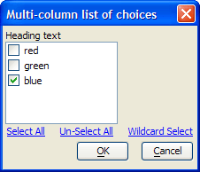
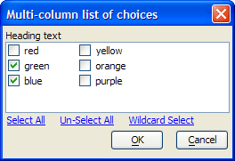

UI_GET_CHECK2()
Syntax
Selections as C = UI_GET_CHECK2( Title as C, Default_Selections as C, Choices as C [, Heading as C [, Select_All as L [, UnSelect_All as L [, Wildcard_Select as L [, Width as N [, Height as N [, Selection_Order as L ]]]]]]] )
Argument | Description |
Selections | A CR-LF delimited list of the user's selections. |
Default_Selections | A CR-LF list of the default selections. |
Choices | A CR-LF delimited list of choices to display. |
Heading | Optional. Default = "". The dialog title. |
Select_All | Optional. Default = .T. . When the value it .T., the Select_All button appears. |
UnSelect_All | Optional. Default = .T. . When the value it .T., the Un-Select_All button appears. |
Wildcard_Select | Optional. Default = .T. . When the value it .T., the Wildcard Select button appears. |
Width | Optional. Default = 80. The width of the dialog in characters. |
Height | Optional. Default = 25. The height of the dialog in lines. |
Selection_Order | Optional. Default = .F.
|
Description
The UI_GET_CHECK2() function displays a list of check boxes. If necessary, the display will be multi-column.
Supported By
Alpha Five Version 8 and Above
Limitations
Desktop applications only.
Example
This example displays a single column of check boxes.
? ui_get_check2("Multi-column list of choices", "blue", choices, "Heading text", .t., .t., .t., 25, 7, .t.) = green blue |

This example displays a single column of check boxes.
ui_get_check2("Multi-column list of choices", defaults, choices, "Heading text", .t., .t., .t., 50, 6, .t.) |

See Also
((User Interaction _UI_ Functions|User Interaction (UI) Functions))